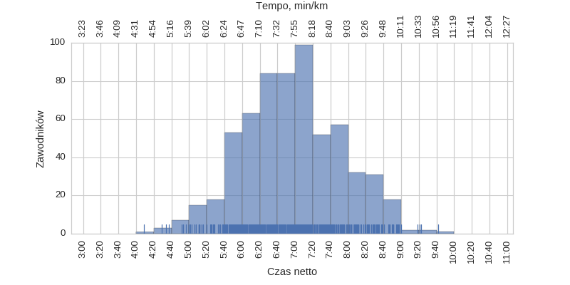
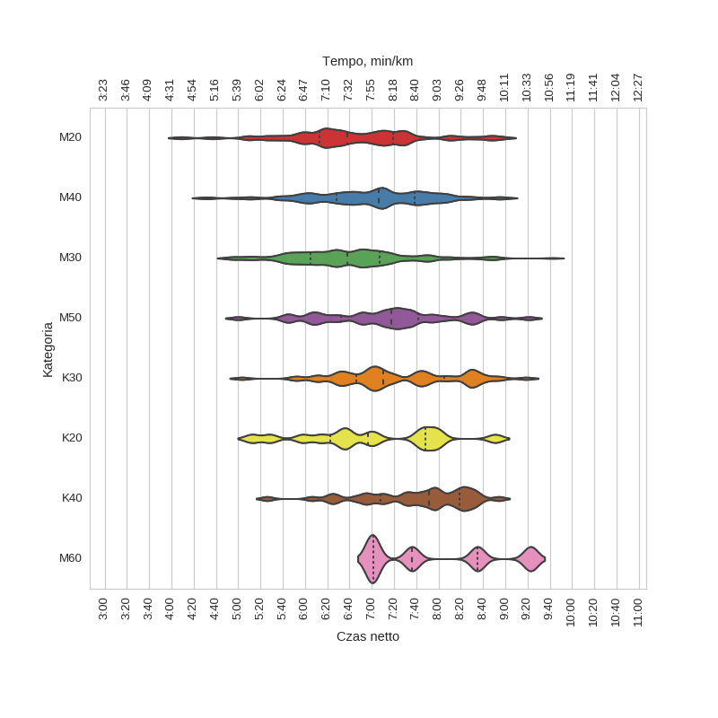

III Ultramaraton Bieszczadzki (2015-10-11)
Histogramy
Klasyfikacja generalna

| mean | std | min | 25% | 50% | 75% | max | |
|---|---|---|---|---|---|---|---|
| czas | 6:57:05 | 0:55:53 | 4:08:49 | 6:18:36 | 6:56:45 | 7:35:41 | 9:42:08 |
Wykresy rybkowe
wg kategorii

| czas | count | |||||||
|---|---|---|---|---|---|---|---|---|
| mean | std | min | 25% | 50% | 75% | max | ||
| kat | ||||||||
| K20 | 6:59:15 | 1:01:52 | 5:12:11 | 6:22:36 | 6:56:58 | 7:48:26 | 8:50:51 | 11 |
| K30 | 7:23:03 | 0:53:55 | 5:03:20 | 6:45:57 | 7:10:36 | 8:05:28 | 9:18:44 | 48 |
| K40 | 7:39:05 | 0:48:25 | 5:25:55 | 7:08:10 | 7:51:24 | 8:19:08 | 8:54:10 | 34 |
| M20 | 6:44:10 | 0:58:22 | 4:08:49 | 6:12:44 | 6:37:52 | 7:19:18 | 8:57:30 | 61 |
| M30 | 6:40:17 | 0:50:57 | 4:51:23 | 6:04:48 | 6:38:03 | 7:07:07 | 9:42:08 | 221 |
| M40 | 7:00:50 | 0:52:14 | 4:29:07 | 6:28:17 | 7:06:02 | 7:38:50 | 9:00:03 | 141 |
| M50 | 7:13:07 | 0:56:41 | 4:59:58 | 6:32:17 | 7:17:33 | 7:41:50 | 9:21:08 | 43 |
| M60 | 7:55:03 | 1:02:26 | 6:59:58 | 7:01:09 | 7:36:13 | 8:35:08 | 9:22:47 | 4 |
Menu
HistogramyWykresy rybkowe
∙ wg kategorii
Liczba uczestników: 622
Wygenerowano: 2016-03-27 12:40:13.057712